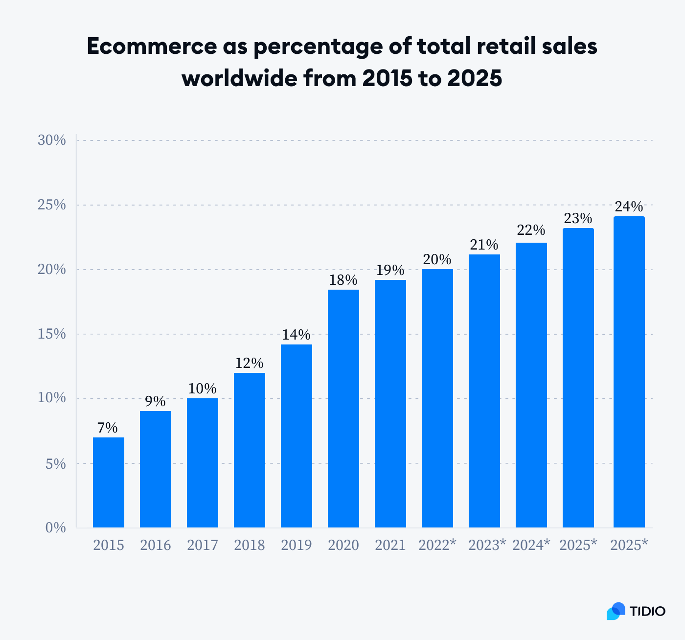
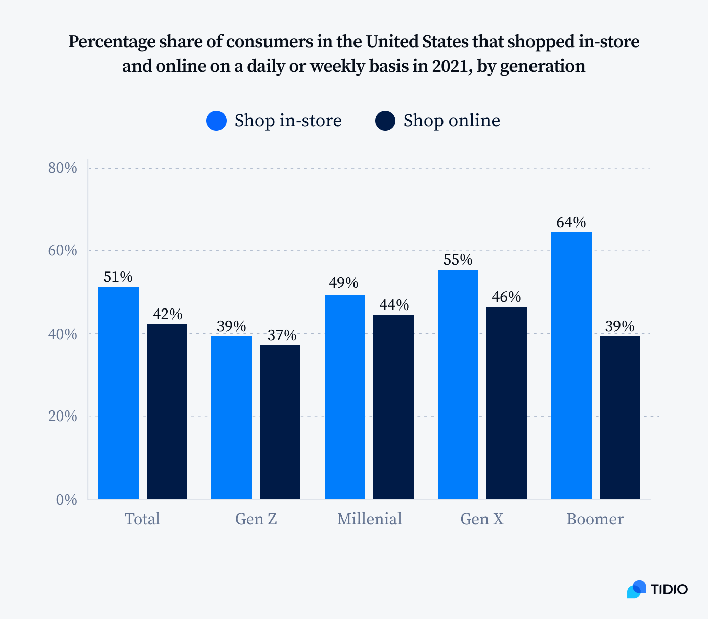

commerce:
Online shopping has been around since 1995, but it wasn’t until recent years that the number of digital shoppers exceeded those who shopped exclusively at physical stores.
Ecommerce, in its current form, is not intended to completely replace in-store shopping. Some retailers are even moving towards a model where you can try things in-store and then get the same product shipped to you.
Most customers embrace both ways of shopping. In the US, the number of customers who didn’t buy anything on the internet decreased to 30%. But digital buyers don’t stop visiting traditional stores—they shop both online and in-store.
Nevertheless, ecommerce sales make up a growing share of retail. As recently as 2017, online sales accounted for just 1/10th of all worldwide sales. By 2025, they are expected to represent almost 25% of total retail sales.

- Currently, about 20% of all retail sales happen online
- The number of brick-and-mortar retail stores in the US is declining, but the total sales volumes at physical stores are still increasing
- The annual growth rate for in-store sales is about 4% while for ecommerce sales it’s almost 13%
- The most popular advertising channels for online stores are Google Shopping, Facebook Ads, Amazon, and Google Search
generation wise buying patterns 
So it’s clear that e-commerce will not replace the offline stores, and they will co exist in some way in or another way.
What:
In a rapidly evolving retail landscape where online and offline channels coexist, Tezi emerges as a pioneering solution that transcends traditional boundaries. Rather than simply offering another platform for online sales or attempting to replicate offline retail models digitally, Tezi fundamentally reimagines the relationship between the two.
The Tezi Approach:
Tezi acknowledges that while online commerce has streamlined direct-to-consumer (DTC) sales, and offline retail possesses established distribution networks, both operate within distinct ecosystems. Our goal is not merely to coexist with these structures but to harness their synergies and propel businesses forward.
Breaking Down Silos:
Tezi breaks down the silos between online and offline retail by offering a unified platform that seamlessly integrates both channels. Whether a brand is selling directly to consumers or engaging in B2B transactions, Tezi provides the tools and infrastructure to navigate these complexities effortlessly.
Elevating Customer Experience:
At the heart of Tezi’s mission is the commitment to elevate the customer experience across all touchpoints. By bridging the gap between digital and physical retail, Tezi enables brands to deliver a cohesive and immersive shopping journey that transcends the limitations of individual channels.
Certainly! Let’s refine the section on how Tezi addresses the challenges of managing both DTC and B2B segments:
How Tezi Solves the DTC and B2B Conundrum:
Many online brands excel in the direct-to-consumer (DTC) space but face unique challenges when expanding into business-to-business (B2B) sales. Tezi recognizes these complexities and offers a comprehensive solution to seamlessly manage both segments.
Challenges in Managing DTC and B2B:
Tailored Functionality:
Traditional DTC themes and stores are not optimized to cater to the specific needs of B2B customers. From custom pricing to exclusive discounts, B2B transactions require tailored functionality that standard DTC platforms often lack.
Complex Onboarding Processes:
Onboarding and approving B2B customers can be time-consuming and cumbersome. Brands must navigate intricate approval processes and establish custom pricing structures for individual clients.
Diverse Pricing Structures:
B2B transactions often involve negotiated pricing, bulk discounts, and exclusive catalog pricing. Managing these diverse pricing structures alongside standard DTC pricing adds another layer of complexity.
Streamlined Order Processing:
Unlike DTC orders, B2B transactions often require follow-up and credit payment options. Brands must ensure seamless order tracking, checkout, and shipping processes to meet the unique needs of B2B customers.
The Tezi Solution:
Tezi simplifies the management of DTC and B2B sales with its all-in-one platform tailored to the needs of modern brands.
Unified Dashboard:
Tezi provides a single, intuitive dashboard where brands can oversee both DTC and B2B activities. From monitoring sales to managing orders, brands gain comprehensive visibility into their operations.
Seamless Onboarding:
With Tezi, onboarding new B2B customers is effortless. Brands can automate the approval process and provide customers with access to specific wholesale pricing and catalogs, streamlining the onboarding experience.
Sales Agent Support:
Tezi empowers sales agents with dedicated login access, enabling them to place orders on behalf of B2B clients. This feature simplifies the sales process and enhances customer service.
Enhanced Customer Experience:
Tezi enhances the B2B customer experience with features such as order tracking, customizable portals, and due payment reminders. By providing a seamless user experience, brands can build long-lasting relationships with their B2B clients.
Simplifying Management:
Gone are the days of managing multiple stores and integrating countless plugins. Tezi eliminates the headache of juggling multiple platforms by offering a single, integrated solution for DTC and B2B sales.
Personalized Experience:
Tezi ensures a personalized experience for each customer. Whether they’re a DTC shopper or a B2B client, users receive tailored experiences based on their unique needs and preferences.
Effortless Integration:
Tezi seamlessly integrates with existing stores, enabling brands to leverage their current infrastructure while unlocking powerful B2B capabilities. With Tezi, there’s no need for complex integrations or plugin management – everything works seamlessly out of the box.
Omnichannel Customer Experience:
Tezi revolutionizes the retail landscape by delivering a truly seamless omnichannel experience, where online and offline worlds seamlessly converge to enhance customer satisfaction and drive business growth.
How Tezi Facilitates Omnichannel Experience:
Unified Inventory Management:
Tezi’s advanced inventory management system ensures real-time synchronization of stock levels across all channels, whether it’s your online store or brick-and-mortar locations. This means that customers can shop with confidence, knowing that the products they see online are available for immediate purchase, even if they prefer to buy from a physical store.
Intelligent Order Routing:
Imagine a scenario where a customer in Delhi places an order on your website, but you have a local retailer in their vicinity with the exact product in stock. Tezi’s intelligent order routing system automatically notifies the retailer, allowing them to fulfill the order locally. This not only enables same-day delivery for the customer but also empowers local retailers to participate in the fulfillment process seamlessly.
Personalized Customer Journeys:
Tezi leverages data analytics and machine learning algorithms to create personalized shopping experiences for every customer, regardless of their preferred channel. Whether they’re browsing your website, interacting with your mobile app, or visiting a physical store, customers receive tailored recommendations, promotions, and offers based on their past behavior and preferences.
Streamlined Communication:
Communication is key to delivering a seamless omnichannel experience. Tezi centralizes all customer communications, allowing brands to engage with their audience across multiple touchpoints, including email, SMS, social media, and in-store interactions. Whether it’s order updates, promotional campaigns, or customer support inquiries, Tezi ensures consistent and timely communication at every stage of the customer journey.
Data-Driven Insights:
By aggregating data from online and offline channels, Tezi provides brands with deep insights into customer behavior, market trends, and sales performance. This invaluable data empowers brands to make informed decisions, optimize their marketing strategies, and tailor their product offerings to meet evolving customer demands.
The Tezi Advantage:
Tezi doesn’t just bridge the gap between online and offline retail – it redefines it. By seamlessly integrating digital and physical channels, Tezi empowers brands to deliver a cohesive, personalized shopping experience that drives customer loyalty, increases sales, and sets them apart from the competition.